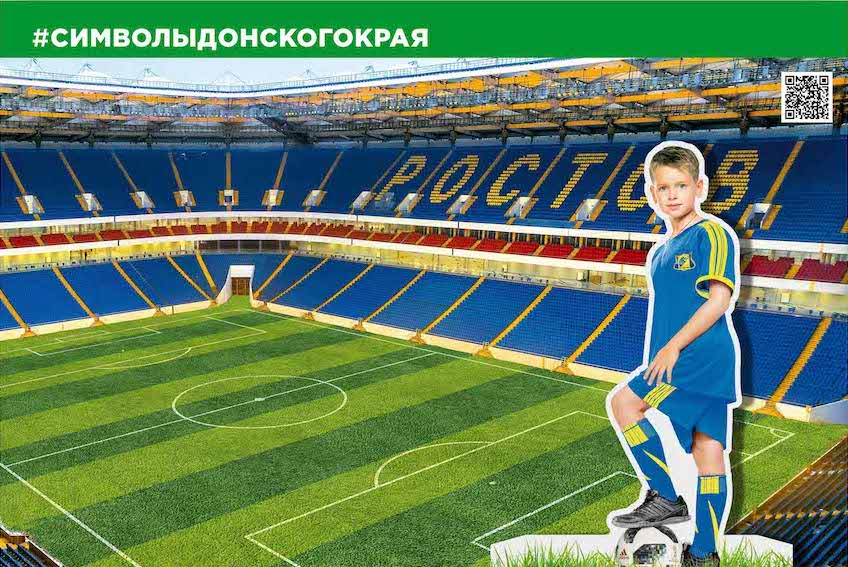

Чемпионат мира по футболу 2018 года будет проходить с 14 июня по 15 июля на 12 стадионах в 11 городах России, в том числе Ростове-на-Дону.
Уникальный спортивный объект стадион «Ростов Арена», построенный к Чемпионату мира по футболу 2018, официально открыт в марте текущего года.
Высококлассный стадион специалисты возводили 5 лет.
«Ростов Арена» расположен на левом берегу Дона, неподалеку от Гребного канала, выделяется среди остальных оригинальным архитектурным решением. Северная трибуна стадиона открыта, за ней открывается красивый вид на реку Дон.
«Ростов Арена» современный стадион, обеспеченный инженерной и транспортной инфраструктурой который отвечает всем базовым требованиям ФИФА – здесь досконально продуманная система безопасности, места для людей со специфическими нуждами, места для средств массовой информации и т. д.
Футбольное поле стадиона представляет собой своеобразный «слоеный пирог». В основании заложена бетонная плита, сверху насыпано щебеночное основание и проведена дренажная система, а вверху – натуральный газон. Высота «пирога» – 1,2 метра. Поле обустроено травяным покрытием (на засев ушло около 400 кг семян).
Одна из особенностей нового стадиона – замечательный обзор, создающий уникальный эффект присутствия. Даже с последних рядов верхних ярусов зритель отлично слышит голоса игроков, четко различает их лица и движения. Этого удалось достичь за счет крутизны трибун, когда каждый следующий ряд почти на 45 см выше предыдущего, и максимально возможной подвижки верхних ярусов к полю (с последнего ряда трибун до кромки поля всего 45 м)».
Первый тестовый матч на стадионе «Ростов-Арена» состоялся 15 апреля. Встречу провели команды «Ростов» и «СКА-Хабаровск».
Во время Чемпионата мира по футболу на «Ростов Арене» сыграют сборные Бразилии и Швейцарии, Уругвая и Саудовской Аравии, Республики Корея и Мексики, Исландии и Хорватии. Там же пройдет один матч 1/8 финала.
Официальный талисман Чемпионата мира по футболу 2018 – волк Забивака ждет любителей футбола в столице Донского края.